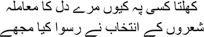

34

No one knew what was going on in my heart, after all
Why did I have to become a poet, all honour is lost
t’s a happy day for us here in our graves, my brothers. I know your hearts have been growing heavy listening to Mirza sahib; but remember, his life was a continuous attempt to push a rock uphill. Every time he tried to reach the top, it rolled back to the bottom, and Mirza sahib continued to push it back uphill again. Can life spend itself pushing rocks uphill? Let hell be in turmoil instead. We will listen to the stories of bald angels, the Ganjay Farishtay. Most of them were people from Bombay’s world of cinema. Life was not the way it was depicted on the screen. Reality is not as neatly organized as films, after all. Life is another name for the war for bread, women, and power. Every story in the world is about this war. Hunger is the most primal of all urges, isn’t it, my brothers? No one can forget hunger. Ever since man came into this world, he has harboured greed for power and lust for women. These things never change, my brothers. Only when man develops a loathing for bread, women, and the throne does he think of Allah. He is even more mysterious and elusive than these three, he cannot be acquired through battle.
Pardon me, I’ve been chattering too much. I had promised to tell you Sitara’s story; I’m starting my account of the bald angels with her. Sitara was the name of a tigress, my brothers; a veritable tornado seemed hidden inside her, not visible outside. Sitara used to practise her dance for an hour every morning, but I never saw her tired. She was incapable of sitting still; she’d always be doing something, or plotting what to do. She had two sisters—Tara and Alaknanda. They had come to Bombay one by one from a village in Nepal to make their fortunes. But among the three sisters, Sitara was peerless. You get one girl in a million such as her. Sometimes I thought that Sitara was actually the name of many women—how else could she have toyed with so many men? Sitara was like a five-storied building in Bombay, with many flats on different floors, some lit up, some dark. She always dressed in thin, transparent muslin saris. The view of her body left nothing to the imagination.
Sitara had been brought to Bombay by a film director. I forget his name—we used to call him Desai. They had even got married. But they could not stay together very long. ‘I’m not capable of coping with this woman,’ Desai used to say. Sitara used to live with someone else at the time, but she would visit Desai regularly. But he didn’t let her stay with him for long stretches. They had been married according to the Hindu Marriage Act. So, although Sitara took new lovers regularly, she was known as Mrs Desai.
Mehboob sahib’s star was at its zenith then. He cast Sitara in one of his films. Mehboob sahib became her victim too. There were new scandals about them in our line of work. Once Mehboob sahib’s film was over and done with, Sitara found herself a new lover. His name was P.N. Arora. He had been trained in film-making in the UK. After this Sitara flung herself on Al-Naseer. Let me tell you a story about P.N. Arora in the meantime, my brothers. I was working in Delhi at the time. One day I saw Arora on the road, limping along with the help of a stick. He didn’t appear to have a drop of life left in him. Asking the tonga to stop, I went up to him.
— Oh, it’s Manto. How are you?
— I’m very well. But why are you in such a state? What’s the matter?
Arora sighed and then smiled. —Sitara, Manto, Sitara. It’s all because of Sitara.
Al-Naseer had arrived from Dehra Dun to be a hero. He was handsome, manly. He even got the hero’s role in a film, in which Sitara had acted as well. Al-Naseer found himself in the tigress’s lair. Don’t imagine, my brothers, that Sitara used to give up one lover before taking another. She used to have them all at once—Desai, Arora, Mehboob, Al-Naseer, and who knew how many more. Back in Bombay, I saw the state Al-Naseer was in. His complexion, which was once pink, had turned ashen. His handsome appearance was ruined, someone seemed to have sucked out all his blood. Al-Naseer said the same thing, ‘Sitara, Manto, Sitara. It’s all because of Sitara.’
— Why, what has she done?
— She’s a vampire, Manto. She has turned me to pulp. I’ll be finished if I can’t get away from her.
Al-Naseer ran away to Dehra Dun. He recovered to some extent after spending three months there and then returned to Bombay.
After this, Sitara did something very strange. Didn’t I tell you she was a girl in a million, my brothers? She was like the flame that moths dive into. This time Sitara snared Nazir sahib. He had taken her into his Society Film Company, and at once he was trapped in her web. Nazir sahib was a simple, large-hearted man. He would clasp the people he loved to his breast while heaping abuse on them. His relationship with Sitara lasted several years. Nazir sahib had a strong personality, which was why Sitara stayed away from other men initially. But she wasn’t capable of such fidelity, my brothers, and started visiting Arora and Al-Naseer and Mehboob and Desai again. Nazir sahib could not accept this. He began to beat her up regularly. Sitara seemed to experience a certain sexual pleasure even in that violence.
Now this story takes an excitingly different turn, my brothers. Nazir sahib’s nephew Asif used to live in the same flat. He may have been young, but he was well built, and handsome too. There had been no women in Asif’s life yet. He was more interested in learning about film-making from his uncle. He knew what was going on between Nazir sahib and Sitara. Her screams and the sounds of wild behaviour emerging from the locked room used to drive him mad every passing day. One day he even managed to get a look at them. He told me later, ‘It was like a dog and a bitch ripping each other apart, Manto bhai. How could my uncle cope with Sitara?’
— It was a dreadful game, wasn’t it, Asif?
— Animals. For the first time I realized that human beings are actually animals. And do you know what love is, Manto bhai?
— What is love?
— A confrontation with death. I want to have such a damned confrontation too, at least once.
— With Sitara?
— You bet. I am going to fight a bout with her at least once, Manto bhai. But you know what, the woman scares me.
— Why? Why should you be afraid of Sitara?
— She seems possessed by a djinn.
— Sitara’s much better than ice-cold women, Asif. Her wildness is full of life. Fight it out.
Asif began by just talking to Sitara. But he didn’t have the nerve to touch her because he was familiar with his uncle’s temper. And yet, everyone knew that Sitara would throw herself at Asif at the first signal from him. He was losing control every passing day. How long could a hungry young man restrain himself? Nazir sahib got wise to their game. One day he beat Sitara up mercilessly, and then told her to leave his flat. But still she didn’t go. That night, growling with rage, Nazir sahib went to his study and fell asleep. Asif sensed his opportunity. Going into Sitara’s room, he touched her wounds tenderly. Bullseye! Asif had his first encounter with death. Then he packed Sitara’s belongings and took her to her own flat in Dadar. Sitara’s new love affair with Asif began. That same night he told her, ‘Our relationship runs very deep, Sitara. Don’t go to anyone else. Be mine alone.’
— My love, it’s you I have been looking for all this time. Believe me, Sitara will never look at anyone else from now on.
— If you do, I’ll go mad.
— I promise.
Sitara showered kisses on Asif.
Asif went back, promising to return the next day. Then Sitara sat down at her dressing table. She did her face again, and changed her sari. Going out, she hailed a taxi and gave Arora’s address to the driver. Tell me, Mirza sahib, do you think this woman was driven by sexual appetite all her life? I see a desperate helplessness in her. The same helplessness that I saw in Saugandhi. Madhu was sucking her dry. Then Saugandhi threw Madhu out one day and went to sleep with her arms around her pet pi-dog. Sitara simply could not stand me, but I wanted her to be able to sleep like Saugandhi one day.
They were strange women, all of them, my brothers. Can I ever forget Nasim Bano, queen of angels? What eyes she had! Like lotus blooms in a lake. I saw Nasim up close when writing the story for the film Begum. S. Mukherjee and I used to discuss the story in Nasim’s home, tinkering with it continuously. We had assumed that she must live in a big house. But her home on Porbander Road was rather old-fashioned, the plaster peeling off the walls, with broken shutters on the windows. The rooms had ordinary furniture, all hired. One day I found her on the veranda, quarrelling with the milkman, who had apparently given her half a litre less than he should have. I was astonished. Nasim’s fans would have willingly let loose torrents of milk for her—and here she was, actually arguing with the milkman. Was the Noorjehan of Pukar like this in real life? And why shouldn’t she be? All of us are built on a scaffolding of straw, after all, which becomes visible every now and then.
The people in the movies like to keep this figure of straw under wraps permanently, my brothers. Nasim used to dress in pink most of the time. Pink is a dangerous colour; it dazzles the eyes. That was the effect Nasim wanted to create. But then, she had the right qualities to dazzle people with. Like pink flower petals—I don’t remember seeing another person with skin like hers.
Alongside her strong attraction to jewellery and perfume, I observed another love she harboured—for her father. She used to keep a photograph of him in her vanity bag. I saw the picture secretly. I had a bad habit, Mirza sahib—peeping into women’s bags in secret. I was peering into Nasim’s bag one day when she came up to me.
— What are you doing, Manto sahib?
— Pardon me. This is a very bad habit that I have. But I cannot control myself.
Nasim chuckled, ‘Thank goodness you’re not in the habit of examining girls’ hearts in secret.’
— I can see them anyway.
— Women’s hearts?
— Hmm.
— Can you tell me what’s in mine?
— A fluttering pink scarf.
— You’re fun, Manto sahib.
— But whose photograph is it?
— Why, it’s of my father, my abbajaan’s. Just saying that one word, abbajaan, seemed to take her back to her dew-soaked childhood days. I noticed the strong bonding and love that her face radiated.
While writing the story for Begum, an argument over a scene with S. Mukherjee carried on till two in the morning. Shafia was with me too that evening. As we were about to leave, Nasim said, ‘Is this any time to travel? Spend the night here.’
— No problem. There’s a train at three-thirty. It’ll be here before we take a turn around the platform.
But Nasim and her husband Ehsan wouldn’t listen. So we had to stay back. Nasim went into the bedroom with Shafia. Ehsan and I lay down on the veranda.
The next day I got a different picture of Nasim from Shafia, my brothers. First, Nasim put a fresh bedspread on the bed. Then she gave Shafia a nightgown, saying, ‘Put this on. It’s absolutely fresh. Then go to sleep.’
— And you?
— I have some things to do.
Nasim changed, removed her make-up and went to bed. Looking at her in surprise, Shafia said, ‘You look so different, Nasim. You’re so dark. Then how …’
— All thanks to cosmetics, Shafia. I’m no better than a bad girl.
Then Nasim proceeded to massage all sorts of oils into her face. Kneeling, she began to read the Quran Sharif. ‘You’re much better than us, Nasim,’ Shafia said artlessly. Nasim didn’t answer; switching the light off, she went to sleep.
I have these fragmented memories of many people, Mirza sahib. Can I ever forget Noorjehan’s voice? People used to talk of how pretty she was, but her beauty never touched me. Only her voice. To me, Noorjehan meant an invitation from the sky. Never again did I hear such a generous voice, such an exquisite kharaj, or such a sharp, well-honed pancham, Mirza sahib. Just as tightrope walkers can be poised stock-still on a rope suspended in mid-air, so too could Noorjehan’s taan—she could easily hold it for an hour or so. But you know what, those whom God favours are the ones who squander their talent the most. Liquor ruins the singer’s voice, and Sahgal sahib couldn’t take a step without a drink. Sour and deep-fried food harm the vocal cords, and Noorjehan would consume a quart of pickles in oil at one go. Sometimes I feel that the Sahgals and Noorjehans were born for confrontations with the lord. As long as our planet survives, Mirza sahib, so will Noorjehan’s voice.
There was no count of the number of people who loved Noorjehan. Never mind the gentlemen, I know many restaurant chefs who used to cook for sahibs and memsahibs with a photograph of Noorjehan’s hanging near the stove, while they sang her songs tunelessly. When Rafiq introduced me to Noorjehan, he said, ‘This is Noor, Noor-e-Jehan, the light of the world. By God, she has been gifted with a voice that will make even the angels of heaven descend to earth if they hear it.’ I knew Noorjehan with my heart and soul even before Rafiq introduced us, simply on the strength of her singing. One of her admirers was a barber I knew. He always talked of her and sang her songs. One day the barber’s friend asked him, ‘Do you really love Noorjehan?’
— I swear on the lord, Noorjehan Begum is my life.
— Can you give up your life for her?
— That’s nothing.
— Can you carve out a portion of your flesh as Mahiwal did?
Pulling his razor out at once, the barber handed it to his friend, saying, ‘Carve it out from any part of my body that you like.’
The barber’s friend was a very strange creature. He really did cut some flesh out of the barber’s arm, and then fled at the sight of the blood-covered limb. The barber had fallen unconscious. When he returned to his senses in the hospital, there was only one name he could utter, ‘Noorjehan.’ It was an astonishing world, my brothers. Love, murder, bloodshed—what good is life without these?
My friend Shyam used to enjoy life unapologetically. I was in Pakistan then. Shyam wrote in a letter, ‘I detest human beings. This is how my life goes on. This life is my lover, whom I love with every fibre.’ Shyam was a strange man. He used the term ‘jokers’ for people who attended meetings and conferences in a pyjama and kurta and cap, looking innocent. He would let loose a flood of invectives whenever anyone began to philosophize on life after drinking. Shyam had been through a long and hard struggle for his money and fame. When he was a pauper, he used to pick up a coin and say laughingly, ‘How much longer will you torment me, my friend? You shall be mine one day or another.’ Shyam got it all—a house, cars, renown. He never forgot me.
I was in dire straits in Pakistan at the time. Virtually no movies were being made; there was no one to write stories for. Meanwhile I had my back to the wall because of the case against me for writing ‘Thanda Gosht’. The court had sentenced me to three months’ rigorous imprisonment and a fine of three hundred rupees. I was sickened. I considered burning everything that I had written. I’d rather work as a clerk in an office. At least my wife and children would survive. I was drinking more and more every day. One day I got a letter from the owner of Tehsin Pictures. Come and see us immediately. There’s a letter from Bombay. I was in Pakistan—who was going to write to me from Bombay? Still, I went. The letter was from Shyam. He had sent five hundred rupees. I burst into tears, Mirza sahib. How did he know that I needed money badly? I tried several times to write to him, but I tore up all my drafts. It wasn’t fitting to thank Shyam. He would definitely have written back—So this is your answer, Manto?
Shyam visited Lahore once for an event. I rushed to meet him. Seeing me from the car, he waved, and asked the driver to stop. But because of the crowd of fans, the driver didn’t dare. I entered the auditorium through the back door to meet him. I’ll come to your hotel tonight, I told him.
At the hotel I had to sit like an outsider. I didn’t have the inclination to push through the crowd of Shyam’s fans to go up to him. At one point he came up to me and said, ‘Everyone’s going to Hira Mandi. You come too. With me.’
— No.
— Why not?
— I shan’t go, you can go if you like.
— Wait for me, then. I’ll be back soon.
Shyam left. I went back home. It was clear that Shyam and I had drifted apart. Just like Hindustan and Pakistan. We weren’t each other’s friends anymore. Just as Ismat never replied to my letters once I came away to Pakistan. How would it have helped even if she had?